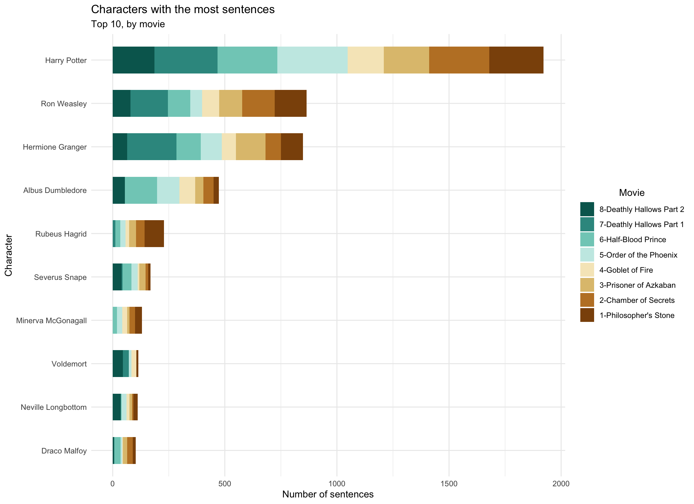
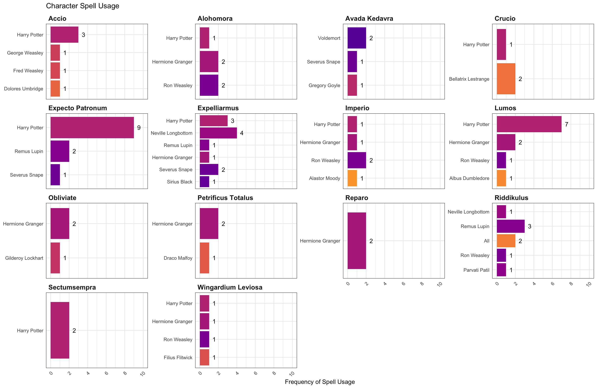
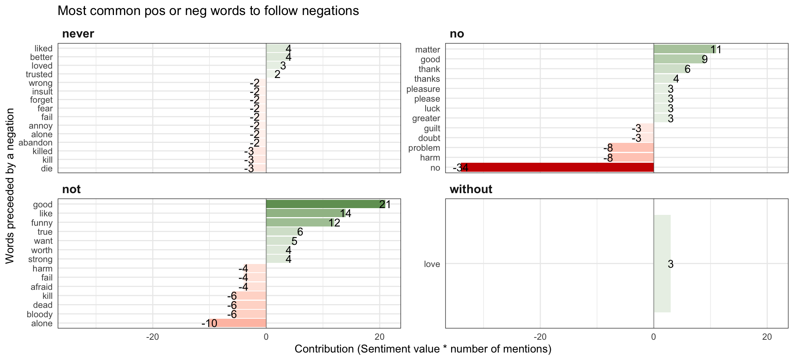
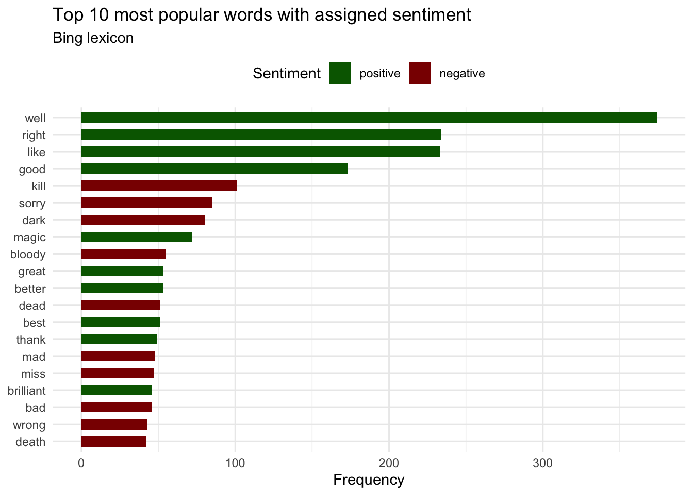

library(tidyverse)
library(dplyr)
library(magrittr)
library(scales)
library(RColorBrewer)
library(ggsci)
library(ggthemes)
library(lubridate)
library(viridis)
library(ggrepel)
library(reshape)
library(gridExtra)
library(tidyverse)
library(reshape)
library(viridis)
library(tm)
library(SnowballC)
library(wordcloud)
library(NLP)
library(reshape)
library(widyr)
library(wordcloud2)
library(tidytext)
library(janeaustenr)
library(htmlwidgets)
library(topicmodels)
library(stringr)final project
0.1 Libraries
The libraries we are going to use for the work are the following:
0.2 Introduction
In this paper we will apply different Text Mining techniques using the different scripts of the Harry Potter films to reveal different patterns and trends in the narrative, the characters and the emotions they may have experienced. Using natural language processing, we will look for insights into plot evolution and emotional development throughout the saga, providing unique insights into one of the most iconic universes of literature and cinema.
Before we continue, we want to warn that this work is made by big fans of the saga, so we will do it with great affection and we apologise in advance if we are too much of a fan. It is also necessary to warn that we may make some spoilers but we promise that they will be small (not related to the plot). For that reason, we recommend that those who read us, watch the movies before, or better yet, read the books. You will thank us when you finish them.
0.3 Databases
La base de datos que utilizaremos en este proyecto se ha recopilado de GitHub y está accesible directamente a través del siguiente enlace: GitHub - HP Dataset.
hp1 <- read_csv("hp1.csv")
hp2 <- read_csv("hp2.csv")
hp3 <- read_csv("hp3.csv")
hp4 <- read_csv("hp4.csv")
hp5 <- read_csv("hp5.csv")
hp6 <- read_csv("hp6.csv")
hp7 <- read_csv("hp7.csv")
hp8 <- read_csv("hp8.csv")
# Fix misspelling of movie #4
hp4 <- hp4 |>
mutate(movie = str_replace_all(string = movie, pattern = "Gobelt", replacement = "Goblet"))
df <- rbind(hp1,hp2,hp3,hp4,hp5,hp6,hp7,hp8)Data wrangling
movie_order <- tribble(~num, ~movie, ~film.name,
1, "Harry Potter and the Philosopher's Stone", "1-Philosopher's Stone",
2, "Harry Potter and the Chamber of Secrets", "2-Chamber of Secrets",
3, "Harry Potter and the Prisoner of Azkaban", "3-Prisoner of Azkaban",
4, "Harry Potter and the Goblet of Fire", "4-Goblet of Fire",
5, "Harry Potter and the Order of the Phoenix", "5-Order of the Phoenix",
6, "Harry Potter and the Half-Blood Prince", "6-Half-Blood Prince",
7, "Harry Potter and the Deathly Hallows Part 1", "7-Deathly Hallows Part 1",
8, "Harry Potter and the Deathly Hallows Part 2", "8-Deathly Hallows Part 2"
)
df <- df |>
left_join(movie_order, by = "movie")0.4 Initial Hypothesis
Some of the questions we are going to address in the paper are:
- Who are the characters that have made the greatest impact on popular culture?
- Is the number of words related to the length of the films?
- What are the most distinctive words or characters in each film?
1 1. TF-IDF
Most sentences in movies
One of the most useful tools in Text Mining is the word count in each text to determine how relevant a certain word or topic may be within a corpus. This approach allows us to identify key terms, frequencies and patterns that emerge in the discourse, offering a solution to discover the predominant themes and relative importance of different concepts throughout the narrative.
However, the count is also useful to identify who are the main characters in different novels or in this case, films. Whereas those people who show the highest number of scripted lines in a film should be the main characters.
That’s going to be the first step in our work, identifying the main characters of the different films. Luckily, we are big fans of the saga and we will be able to check the results quite easily, but we could do it with any script to know its importance.
# Save df as a dataframe with variables 'character' and 'movie'
Char_Dial <- data.frame(table(df$character, df$movie))
# Sum lines for each character throughout all movies
Char_Dial_Sum <- Char_Dial %>%
group_by(Var1) %>%
summarise(Total_Freq = sum(Freq)) %>%
ungroup()
# Select top 10 characters with the most spoken lines
Char_Dial_Top10 <- Char_Dial_Sum %>%
arrange(desc(Total_Freq)) %>%
slice_max(Total_Freq, n = 10)
# Create a graph for the top 10 characters with the most lines
ggplot(Char_Dial_Top10, aes(x = reorder(Var1, Total_Freq), y = Total_Freq)) +
geom_bar(stat = "identity", width = 0.62, fill = "steelblue") +
coord_flip() +
labs(title = "Characters with the most sentences",
subtitle = "Top 10 across all parts of a movie series",
x = "Character", y = "Number of sentences") +
theme_minimal() +
theme(legend.position = "none") # Remove legend because it is not relevantIn this graph we can see who are the 10 most important characters in the Harry Potter saga.
As you might expect, the character who has the most lines in the films is the one who appears in the title of the films and is known as ‘The Chosen One’ or Harry Potter, to those who aren’t such big fans. Harry is followed by his best friends, Ron Weasly and Hermione Granger, completing the Golden Trio.
However, when reviewing the results and as fans of the saga we are struck by the appearance of a particular character Horace Slughorn this character appears in the sixth installment having great prominence only in this one, being more forgotten in the last two. In addition, in this list there are great forgotten characters such as Draco Malfoy who despite being a very important character in the saga, being one of the main enemies of Harry Potter, is not in the top 10. This could be an indication of the great impact that this character had on popular culture, as everyone who has seen the films or read the books remembers this character, but instead he hardly appears on screen, according to the results obtained.
Next, we are going to divide this analysis by films, to observe how the phrases are distributed throughout the saga. To do this, we will store the names of the characters mentioned in the following vector, with the licence to change Horace Slughorn to Draco Malfoy.
top_characters <- c("Harry Potter", "Ron Weasley", "Hermione Granger", "Albus Dumbledore", "Rubeus Hagrid", "Severus Snape", "Minerva McGonagall", "Voldemort","Neville Longbottom", "Draco Malfoy")
Char_Dial <- data.frame(table(df$character, df$film.name))
Char_Dial %>%
arrange(desc(Freq)) %>%
filter(Var1 %in% top_characters) %>%
ggplot(aes(reorder(Var1, +Freq), Freq, fill = Var2)) +
geom_bar(stat = "identity", width = 0.62)+
scale_fill_uchicago()+
coord_flip()+
guides(fill = guide_legend(title.position = "top", reverse = T))+
labs(title = "Characters with the most sentences",
subtitle = "Top 10, by movie", fill = "Movie",
x = "Character", y = "Number of sentences")+
theme_minimal()+
theme(legend.title.align = 0.5, legend.position = "right", legend.direction = "vertical") 
Most used Spells
In this section, we are going to talk about magic, more specifically spells. In the world of Harry Potter, in order to do magic, you have to cast a spell in a certain way. That is why we are going to see which are the most used spells in the saga.
To do this, first of all, we are going to store in a vector all the spells that are mentioned in the films. To see where we have taken the spells from, click on here.
spells <- c('Accio', 'Alohomora', 'Avada Kedavra', 'Crucio', 'Expecto Patronum', 'Expelliarmus', 'Imperio',
'Lumos', 'Obliviate', 'Petrificus Totalus', 'Reparo', 'Riddikulus', 'Sectumsempra', 'Wingardium Leviosa')
# We add a column to identify the spell mentioned in each dialogue.
df$spell <- NA # Initialize the variable with `NA`
for(spell in spells) {
df$spell <- ifelse(grepl(spell, df$dialog, ignore.case = TRUE), spell, df$spell)
}
# We calculate the count of each spell.
spell_counts <- df %>%
filter(!is.na(spell)) %>% # Exclude lines without spells
count(spell, sort = TRUE) # Count occurances for each spell and sort in order
library(viridis) # Make sure to have this package installed
ggplot(spell_counts, aes(x = reorder(spell, n), y = n, fill = spell)) +
geom_bar(stat = "identity") +
geom_text(aes(label = n), position = position_dodge(width = 0.9), hjust = -0.1, size = 3.5) +
coord_flip() +
scale_fill_viridis(discrete = TRUE, option = "D") +
labs(title = 'Spells most commonly used',
subtitle = "Frequency of mentioning spells in dialogues",
x = 'Spells',
y = 'Frequency') +
theme_minimal() +
theme(legend.title = element_blank(),
axis.title.x = element_text(size = 12, face = "bold"),
axis.title.y = element_text(size = 12, face = "bold"),
plot.title = element_text(size = 14, face = "bold"),
plot.subtitle = element_text(size = 10),
legend.position = "none") The most used spells are Expeliarmus and Expecto Patronum with a total of 12 times throughout all 8 movies. But let’s see how they are distributed across the series.
Spels_df <- data.frame(table(df$character, df$film.name, df$spell))
Spels_df %>%
arrange(desc(Freq)) %>%
filter(Var3 %in% spells) %>%
ggplot(aes(reorder(Var3, +Freq), Freq, fill = Var2)) +
geom_bar(stat = "identity", width = 0.62) +
scale_fill_brewer(palette = "Set2") +
coord_flip() +
guides(fill = guide_legend(title.position = "top", title = "Movie Part")) +
labs(title = "Spells most commonly used",
subtitle = "Frequency of mentioning spells by movie",
x = "Spells",
y = "Number of appareances") +
theme_minimal() +
theme(legend.title.align = 0.5,
legend.position = "right",
legend.direction = "vertical",
plot.title = element_text(size = 14, face = "bold"),
plot.subtitle = element_text(size = 12),
axis.title.x = element_text(size = 12),
axis.title.y = element_text(size = 12),
legend.text = element_text(size = 10)) However, there is some confusion in this review because, for example, the spell Riddikulus` might seem to be of great importance to the plot, but in reality, it is not (again, we take advantage of the fact that we are fans to discover this). This spell appears, because in a scene numerous characters say it, because they are in a magic class, but they don’t use it again in any film, that’s why it only appears in the film of the ‘Prisoner of Azkaban’.
In consequence, we are going to do the same thing but this time instead of separating by films by the number of films they appear in:
Spels_df |>
filter(Freq > 0) |>
select(Var2, Var3) |>
distinct() |>
count( Var3) |>
ggplot(aes(y = reorder(Var3, +n), x = n, fill = Var3 == "Riddikulus") ) +
geom_bar(stat = "identity", width = 0.62, color = "steelblue") +
scale_fill_manual(values = c( "steelblue", "peru")) +
labs(title = "Riddikulus is in only one movie",
subtitle = "Number of movies mentioning this spell",
y = "Spells",
x = "Number of movies appearing in") +
theme_minimal() +
theme(legend.title.align = 0.5,
legend.position = "none",
legend.direction = "vertical",
plot.title = element_text(size = 14, face = "bold"),
plot.subtitle = element_text(size = 12),
axis.title.x = element_text(size = 12),
axis.title.y = element_text(size = 12),
legend.text = element_text(size = 10),
panel.grid.minor = element_blank()
) Having seen how the spells are distributed by film, another way to visualise it is to divide it up according to who the characters are who conjure them. Let’s get down to it:
spell_character_counts <- df %>%
filter(spell %in% spells) %>%
count(spell, character) %>%
arrange(spell, desc(n))
# Creando el gráfico
ggplot(spell_character_counts, aes(x = reorder(character, n), y = n, fill = character)) +
geom_bar(stat = "identity") +
facet_wrap(~ spell, scales = "free_y") +
coord_flip() +
scale_fill_viridis_d(begin = 0.2, end = 0.8, direction = -1, option = "C") +
labs(title = "Character Spell Usage",
x = "Character",
y = "Frequency of Spell Usage") +
theme_minimal() +
theme(axis.text.x = element_text(angle = 45, hjust = 1),
strip.text.x = element_text(face = "bold"),
legend.position = "none") 
Here we can see the distribution of the different spells cast by the different characters. We can see how most of them are dominated by either Harry Potter or Hermione Granger. Or in the case of the ‘Unforgivable Curses’ (for non-fans, we are referring to spells that are forbidden in the Harry Potter world, such as Avada Kedabra), predominate Voldemort and other dark wizards from the saga. This serves as a great indicator of the relevance of these characters, as well as showing who other influential characters are in the plot.
At this point, we have already found out which spells are used the most and which characters speak the most. The next step is to observe which words are repeated the most and calculate their frequency.
Most used Words
The first step is to check which film is the most scripted or the longest. That is to say, we will assimilate that the films that have the most dialogue are those that offer us the most minutes on the big screen.
library(dplyr)
total_dialogs <- df %>%
group_by(movie) %>%
summarize(total_dialogs = n()) # Count the number of rows per group, which is equivalent to counting dialogues.
total_dialogs# A tibble: 8 × 2
movie total_dialogs
<chr> <int>
1 Harry Potter and the Chamber of Secrets 987
2 Harry Potter and the Deathly Hallows Part 1 1012
3 Harry Potter and the Deathly Hallows Part 2 712
4 Harry Potter and the Goblet of Fire 741
5 Harry Potter and the Half-Blood Prince 1070
6 Harry Potter and the Order of the Phoenix 1157
7 Harry Potter and the Philosopher's Stone 885
8 Harry Potter and the Prisoner of Azkaban 881Let’s represent it in a graph.
ggplot(total_dialogs, aes(x = reorder(movie, -total_dialogs), y = total_dialogs, fill = movie)) +
geom_bar(stat = "identity") +
coord_flip() + # Barras horizontales
labs(title = "Total Dialogues by Harry Potter Movie",
x = "Movie",
y = "Total Dialogs") +
theme_minimal() +
theme(legend.position = "none") Looking at the results and comparing it with the length of the films, we can see that it does not match, i.e. the film with the most dialogue is Harry Potter and the Order of the Phoenix, being the second shortest film of the saga. The information about the duration of the films is the following, although you can find more information about it, in the following link.
Sorcerer’s Stone = 152 minutes = 2 hours 32 minutes
Chamber of Secrets = 161 minutes = 2 hours 41 minutes
Prisoner of Azkaban = 142 minutes = 2 hours 22 minutes
Goblet of Fire = 157 minutes = 2 hours 37 minutes
Order of the Phoenix = 139 minutes = 2 hours 18 minutes
Half Blood Prince = 153 minutes = 2 hours 33 minutes
Deathly Hallows pt 1 = 146 minutes = 2 hours 26 minutes
Deathly Hallows pt 2 = 130 minutes = 2 hours 10 minutes
There doesn’t seem to be that much of a relationship between the amount of dialogue and the number of minutes in the film. Let’s do the same, but instead of dialogue for words.
words <- df %>%
unnest_tokens(word, dialog) %>%
count(movie, word, sort = TRUE)
movie_words <- df %>%
# we tokenize as usual (as an exception we won't be filtering stopwords now)
unnest_tokens(word, dialog) %>%
count(movie, word, sort = TRUE) |>
group_by(movie) %>%
summarize(total_words = sum(n))
movie_words# A tibble: 8 × 2
movie total_words
<chr> <int>
1 Harry Potter and the Chamber of Secrets 10814
2 Harry Potter and the Deathly Hallows Part 1 10212
3 Harry Potter and the Deathly Hallows Part 2 6504
4 Harry Potter and the Goblet of Fire 8230
5 Harry Potter and the Half-Blood Prince 11330
6 Harry Potter and the Order of the Phoenix 9672
7 Harry Potter and the Philosopher's Stone 9818
8 Harry Potter and the Prisoner of Azkaban 9720ggplot(movie_words, aes(x = reorder(movie, -total_words), y = total_words, fill = movie)) +
geom_bar(stat = "identity") +
coord_flip() + # Barras horizontales
labs(title = "Total Words by Harry Potter Movie",
x = "Movie",
y = "Total Words") +
theme_minimal() +
theme(legend.position = "none")Again, we see that although the number of words is more closely related to the length of the film, it does not coincide, so we can discard the hypothesis that the longer the dialogue, the longer the film.
Once we have checked this, the next step is to look at the term frequency of each word, to see which words are the most representative of each film. This is calculated as the number of times the word is repeated in the film divided by the total number of words in the film.
movie_words <- words %>%
left_join(movie_words, by = "movie") |>
#we add a column for term_frequency in each novel
mutate(term_frequency = n/total_words)
movie_words# A tibble: 14,022 × 5
movie word n total_words term_frequency
<chr> <chr> <int> <int> <dbl>
1 Harry Potter and the Half-Blood Prince you 432 11330 0.0381
2 Harry Potter and the Half-Blood Prince i 409 11330 0.0361
3 Harry Potter and the Order of the Pho… you 382 9672 0.0395
4 Harry Potter and the Prisoner of Azka… you 382 9720 0.0393
5 Harry Potter and the Chamber of Secre… you 376 10814 0.0348
6 Harry Potter and the Deathly Hallows … you 356 10212 0.0349
7 Harry Potter and the Deathly Hallows … the 344 10212 0.0337
8 Harry Potter and the Philosopher's St… you 326 9818 0.0332
9 Harry Potter and the Chamber of Secre… the 320 10814 0.0296
10 Harry Potter and the Goblet of Fire you 315 8230 0.0383
# ℹ 14,012 more rowsggplot(movie_words, aes(x = term_frequency)) +
geom_histogram(binwidth = 0.0001, fill = "#0073C2FF", color = "black") +
xlim(NA, 0.009) + # Límites en el eje x para enfocar hasta 0.01
scale_y_continuous(breaks = seq(0, 7000, by = 500)) + # Ajusta los breaks del eje y
labs(title = "Distribution of Term Frequency Across All Movies",
x = "Term Frequency (as a percentage of total words)",
y = "Count") +
theme_minimal() +
theme(axis.text.x = element_text(angle = 45, hjust = 1))This graph is a histogram showing the distribution of the frequency of terms in dialogue across all the Harry Potter films. Each bar represents the number of terms (y-axis) that occur with a certain frequency (x-axis) within the total set of words in the films. It can be seen that there are a large number of words with low frequency, suggesting that there are a large number of words that are not repeated.
Now we are going to observe a frequency distribution but per film, looking at which film is richer in vocabulary.
ggplot(movie_words, aes(x = term_frequency, fill = movie)) +
geom_histogram(bins = 30, position = "identity") + # Eliminamos la transparencia con alpha
scale_x_continuous(limits = c(NA, 0.0009), labels = scales::percent_format(accuracy = 0.01)) +
scale_fill_manual(values = c("Harry Potter and the Chamber of Secrets" = "#1f77b4",
"Harry Potter and the Deathly Hallows Part 1" = "#ff7f0e",
"Harry Potter and the Deathly Hallows Part 2" = "#2ca02c",
"Harry Potter and the Goblet of Fire" = "#d62728",
"Harry Potter and the Half-Blood Prince" = "#9467bd",
"Harry Potter and the Order of the Phoenix" = "#8c564b",
"Harry Potter and the Philosopher's Stone" = "#e377c2",
"Harry Potter and the Prisoner of Azkaban" = "#7f7f7f")) + # Añade más colores según sea necesario
labs(title = "Distribution of Term Frequency Across Movies",
x = "Term Frequency (as a percentage of total words)",
y = "Count") +
theme_minimal() +
theme(legend.position = "right", legend.title = element_blank())We can observe that the film richest in vocabulary is Harry Potter and the Half-Blood Prince. However, the distribution of the different films is not clear.
# Vizualization
ggplot(movie_words, aes(x = term_frequency, fill = movie)) +
geom_histogram(binwidth = 0.0001, color = "white") +
scale_x_continuous(limits = c(NA, 0.003), labels = scales::percent_format(accuracy = 0.0001)) +
facet_wrap(~ movie, ncol = 2, scales = "free_y") +
scale_fill_brewer(palette = "Set3") +
labs(title = "Term Frequency Distribution by Movie",
x = "Term Frequency",
y = "Count") +
theme_light() + # Aplicamos un tema claro
theme(legend.position = "bottom",
axis.text.x = element_text(angle = 45, hjust = 1),
strip.background = element_rect(fill = "lightblue"),
strip.text.x = element_text(size = 8, color = "navy"))In general, we can observe that all the films present a similar distribution.
TF-IDF
The next step in our analysis is to use the term frequency-inverse document frequency (tf-idf) technique to highlight words that are distinctive in each film in the Harry Potter series. Tf-idf is useful because it helps us to identify not only the most frequent words, but also those that are particularly significant in a given document in relation to a collection of documents. This allows us to look beyond mere frequency and consider the relevance of a term, giving us a more nuanced view of how language is used in the different films.
By calculating the tf-idf of each term in the context of each film, we can filter and visualise the 20 most characteristic words per film, giving us a list of distinctive terms that define or are emblematic of each film.
#we create a new variable with the analysis
movie_tf_idf <- movie_words %>%
bind_tf_idf(word, movie, n) |>
select(-total_words) %>%
#we arrange by tf-idf in descending order
arrange(desc(tf_idf))
# Vizualization
movie_tf_idf %>%
group_by(movie) %>%
slice_max(tf_idf, n = 20) %>%
ungroup() %>%
ggplot(aes(tf_idf, fct_reorder(word, tf_idf), fill = movie)) +
geom_col(show.legend = FALSE) +
facet_wrap(~ movie, ncol = 2, scales = "free") +
scale_fill_brewer(palette = "Set2") +
labs(x = "TF-IDF", y = "Words") +
theme_minimal() +
theme(axis.text.y = element_text(angle = 0),
strip.background = element_rect(fill = "lightblue"),
strip.text.x = element_text(size = 10, color = "navy"))This analysis is quite representative and is of great help in identifying very relevant factors in the plot. Moreover, when we look at the results, they are quite faithful to reality, because we as fans can state that in most cases, the words with the highest tf-idf are very important in the film.
For example, in Harry Potter and the Deathly Hallows Part 1 the most distinctive word is Dobby, this character, without going into spoilers, has one of the most important and moving scenes of the whole saga in this film. On the other hand, if we look at the fifth instalment of the saga ( Harry Potter and the Order of the Phoenix), the most distinctive word is prohesy which makes sense because the whole film revolves around a very important prophecy in the story. Likewise, in the third instalment Harry Potter and the Prisoner of Azkaban the most important word is Pettigrew and dementos, both of which are quite relevant to this film. If the person reading this is a fan, he or she will agree with the results.
Finally, at the beginning of the analysis we were surprised by the sequences of dialogue that Horace Slughorn had, as he only appears in 3 of the 8 films, but apparently this character is very distinctive in the sixth film, with his name and surname being the most important words in the whole film.
2 SENTIMENT ANALYSIS
# movie_order <- tribble(~num, ~movie, ~film.name,
# 1, "Harry Potter and the Philosopher's Stone", "1-Philosopher's Stone",
# 2, "Harry Potter and the Chamber of Secrets", "2-Chamber of Secrets",
# 3, "Harry Potter and the Prisoner of Azkaban", "3-Prisoner of Azkaban",
# 4, "Harry Potter and the Goblet of Fire", "4-Goblet of Fire",
# 5, "Harry Potter and the Order of the Phoenix", "5-Order of the Phoenix",
# 6, "Harry Potter and the Half-Blood Prince", "6-Half-Blood Prince",
# 7, "Harry Potter and the Deathly Hallows Part 1", "7-Deathly Hallows Part 1",
# 8, "Harry Potter and the Deathly Hallows Part 2", "8-Deathly Hallows Part 2"
# )
#
# df <- df |>
# left_join(movie_order, by = "movie")bing_sentiment <- df %>%
unnest_tokens(output = word, input = dialog) %>%
inner_join(get_sentiments("bing"), "word")
affinn_sentiments <- df |>
mutate(linenumber = row_number(), .by = film.name) %>%
unnest_tokens(output = word, input = dialog) %>%
inner_join(get_sentiments("afinn")) %>%
mutate(method = "AFINN")Sentiment by chunks of dialogue
affinn_sentiments |>
group_by(film.name, index = linenumber %/% 100) %>% # split movie dialogue into chunks of lines.
summarise(sentiment = sum(value)) |> # sum up the sentiment
ggplot(aes(index, sentiment, fill = sentiment)) +
geom_col(show.legend = FALSE) +
scale_fill_gradient2(high = "darkgreen",
midpoint = 0,
low = "red3")+
facet_wrap(~film.name , ncol = 2, scales = "free_x") +
theme_minimal() +
theme(
panel.grid.major.x = element_blank(),
panel.grid.minor = element_blank(),
axis.text = element_blank(),
strip.text = element_text(face = "bold", hjust = 0),
panel.border = element_rect(fill = NA, color = "gray20")
) +
labs(
x = "Each chunk split up by 100 lines",
subtitle = "AFFINN method"
)When splitting up the dialogue into 100-line chunks, you can see which movies have the most positive and negative sentiment. The 6th movie appears to be the most positive. One chunk in the early middle part of the movie has the highest rating of all. The most negative chunk of dialogue is at the middle of the 2nd movie. The 7th movie appears to be neutral throughout and the 8th movie is mostly negative. The first two movies end very positively, unlike any of the others.
Now let’s get more detailed.
affinn_sentiments |>
group_by(film.name, index = linenumber %/% 20) %>%
summarise(sentiment = sum(value)) |>
ggplot(aes(index, sentiment, fill = sentiment)) +
geom_col(show.legend = FALSE) +
scale_fill_gradient2(high = "darkgreen", midpoint = 0,
low = "red3") +
facet_wrap(~film.name , ncol = 2, scales = "free_x") +
theme_minimal() +
theme(
panel.grid.major.x = element_blank(),
panel.grid.minor = element_blank(),
axis.text = element_blank(),
strip.text = element_text(face = "bold", hjust = 0),
panel.border = element_rect(fill = NA, color = "gray20")
) +
labs(
x = "Each chunk split up by 20 lines",
subtitle = "AFFINN method"
) Now we can see more detailed changes in sentiment with 20-line chunks. The 6th movie is still positive, especially in the middle, but now we see a few negative dialogue between the positive ones. It is not all positive. We see that the 7th movie has both positive and negative dialogues but they cancel each other out when grouping into large chunks. The most positive sentiment happens at the end of the 1st movie. The 3rd movie starts very positive, as we can see from the 100-line chunks, but now we see that there are some really negative dialogues in the second half of the movie. The most negative dialogues appear to be in the 3rd film.
Now, let’s see about grouping it by chapter:
affinn_sentiments |>
group_by(film.name, chapter) %>% # group by chapter
summarise(sentiment = sum(value), index = min(linenumber)) |>
arrange(index) |>
ggplot(aes(reorder(chapter, index),
sentiment, fill = sentiment)) +
geom_col(show.legend = FALSE) +
scale_fill_gradient2(high = "darkgreen", midpoint = 0,
low = "red3")+
facet_wrap(~film.name , ncol = 2, scales = "free_x") +
theme_minimal() +
theme(
panel.grid.major.x = element_blank(),
panel.grid.minor = element_blank(),
axis.text = element_blank(),
strip.text = element_text(face = "bold", hjust = 0),
panel.border = element_rect(fill = NA, color = "gray20")
)+
labs(
x = "Each chunk split up by chapter",
subtitle = "AFFINN method"
)The most positive chapter is in the 6th movie, but close is in the 3rd. Most nagative chapter is in the 2nd. Now we can see one very positive chapter towards the end of teh 8th movie. We also see that the negative detailed chunks in the middle of the 6th movie is gone. All the chapters in the middle
The three methods of looking at sentiment analysis shows that we will get different results from different methods of grouping text. The first method, large chunks of dialogue, gives an overall feeling for long portions of the movie, but hides the mood of a specific scene. The second method, small chunks of dialogue, shows you the detailed view of sentiment which is cancelled out in the first method. The last method, grouping dialogue by chapter, provides a more natural analysis of the flow of each movie. The writers and director meant for each chapter to have a certain feeling, which can be lost when cutting a movie into chunks of dialogue arbitrarily.
2.1 Bigrams
df_bigrams <- df %>%
#we take the dialogue in df, and tokenize it to sequences of 2 words
unnest_tokens(bigram, dialog, token = "ngrams", n = 2) %>%
drop_na(bigram)
df_bigrams %>%
count(bigram, sort = TRUE)# A tibble: 35,946 × 2
bigram n
<chr> <int>
1 in the 191
2 are you 152
3 i don't 150
4 you know 148
5 of the 145
6 do you 144
7 i think 125
8 to the 120
9 come on 118
10 to be 114
# ℹ 35,936 more rowsbigrams_separated <- df_bigrams |>
# separate each bigram in two columns, word1 and word2
separate(bigram, c("word1", "word2"), sep = " ")
bigrams_filtered <- bigrams_separated %>%
filter(!word1 %in% stop_words$word) %>%
filter(!word2 %in% stop_words$word)
bigrams_filtered %>%
count(word1, word2, sort = TRUE)# A tibble: 4,525 × 3
word1 word2 n
<chr> <chr> <int>
1 harry potter 95
2 ha ha 34
3 dark lord 27
4 bloody hell 24
5 professor dumbledore 23
6 sirius black 22
7 professor snape 20
8 miss granger 18
9 harry harry 17
10 dark arts 16
# ℹ 4,515 more rowsbigrams_united <- bigrams_filtered %>%
unite(bigram, word1, word2, sep = " ")After removing all stopwords from the list of bigrams, we see a lot of names: Harry Potter, Professor Dumbledore, Sirius Black, and so on. The second most used bigram is “ha ha,” which I assume is referring to someone laughing. Also in the top ten is “bloody hell,” which is an exclamation and “dark arts,” which is part of the name of a class at Hogwarts.
bigrams_united %>%
count(bigram, sort = T) %>%
slice_max(n, n=15) %>%
ggplot(aes(y = reorder(bigram, n), x = n))+
geom_bar(stat = "identity", width = 0.65, fill = "peru", alpha = 1)+
labs(title = "Most popular bigrams in the movies",
subtitle = "Top 15, after removing stopwords",
y = NULL, x = "Frequency")+
theme_minimal()Negation words
There is a major problem with simply looking at sentiment for each word by itself: context. By itself, the word “funny” is very positive. AFFINN gives it a score of +4. But in the context of a dialogue, “not funny” is not positive and could be considered negative. Let’s see how many bigrams– including negations words like not, no, never– affect the sentiment of the Harry Potter films.
negation_words <- c("not", "no", "never", "without", "neither", "nor")
not_words <- bigrams_separated %>%
filter(word1 %in% negation_words) %>%
inner_join(get_sentiments("afinn"), by = c(word2 = "word")) %>%
count(word1, word2, value, sort = TRUE)not_words %>%
mutate(contribution = n * value,
sign = if_else(value > 0, "postive", "negative")) %>%
group_by(word1) %>%
slice_max(abs(contribution), n=10) %>%
ungroup() %>%
ggplot(aes(y = reorder_within(word2, contribution, word1),
x = contribution,
fill = contribution)) +
geom_col() +
geom_vline(xintercept = 0, alpha = .3) +
scale_y_reordered() +
facet_wrap(~ word1, scales = "free_y", ncol = 2) +
labs(y = 'Words preceeded by a negation',
x = "Contribution (Sentiment value * number of mentions)",
title = "Most common pos or neg words to follow negations") +
scale_fill_gradient2(high = "darkgreen",
midpoint = 0,
low = "red3")+
theme_minimal() +
theme(
strip.text = element_text(face = "bold", hjust = 0),
panel.border = element_rect(fill = NA, color = "gray20"),
legend.position = "none"
) 
2.2 Trigrams
df_trigrams <- df %>%
#we take the dialogue in df, and tokenize it to sequences of 2 words
unnest_tokens(trigram, dialog, token = "ngrams", n = 3) %>%
drop_na(trigram)
df_trigrams %>%
count(trigram, sort = TRUE)# A tibble: 54,166 × 2
trigram n
<chr> <int>
1 i don't know 52
2 you know who 36
3 what are you 35
4 what do you 29
5 what is it 27
6 the dark lord 26
7 chamber of secrets 24
8 do you think 24
9 the chamber of 22
10 do you know 21
# ℹ 54,156 more rowstrigrams_separated <- df_trigrams |>
# separate each trigram in three columns, word1 and word2 and word3
separate(trigram, c("word1", "word2", "word3"), sep = " ")
trigrams_filtered <- trigrams_separated %>%
filter(!word1 %in% stop_words$word) %>%
filter(!word2 %in% stop_words$word) %>%
filter(!word3 %in% stop_words$word)
trigrams_filtered %>%
count(word1, word2, word3, sort = TRUE)# A tibble: 1,338 × 4
word1 word2 word3 n
<chr> <chr> <chr> <int>
1 ha ha ha 19
2 tri wizard tournament 8
3 dark arts teacher 6
4 tom riddle's diary 6
5 half blood prince 5
6 lumos maxima lumos 4
7 maxima lumos maxima 4
8 professor dumbledore sir 4
9 educational decree twenty 3
10 happy christmas harry 3
# ℹ 1,328 more rowstrigrams_united <- trigrams_filtered %>%
unite(trigram, word1, word2, word3, sep = " ")trigrams_united %>%
count(trigram, sort = T) %>%
slice_max(n, n=10) %>%
ggplot(aes(y = reorder(trigram, n), x = n))+
geom_bar(stat = "identity", width = 0.65, fill = "peru", alpha = 1)+
labs(title = "Most popular trigrams in the movies",
subtitle = "Top 15, after removing stopwords",
y = NULL, x = "Frequency")+
theme_minimal()bing_sentiment %>%
group_by(word, sentiment) %>%
summarise(count = n()) |>
ungroup() %>%
arrange(desc(count)) %>%
slice(1:20) %>%
ggplot(., aes(y = reorder(word, count), x = count, fill = sentiment))+
geom_bar(stat = "identity", width = 0.62)+
scale_fill_brewer(palette = "Set1", type = "div") +
labs(title = "Most popular words with assigned sentiment",
subtitle = expression("Top 20 words"),
x = "Word", y = "Frequency", fill = "Sentiment")+
guides(fill = guide_legend(reverse = T))+
theme_minimal()+
theme(legend.position = "top")bing_sentiment %>%
group_by(movie, sentiment) %>%
summarise(count = n())%>%
ungroup() |>
ggplot(aes(y = movie, x = count, fill = sentiment)) +
geom_bar(stat = "identity", position = "fill", width = 0.7, alpha = 0.9)+
scale_fill_brewer(palette = "Set1")+
# scale_y_continuous(labels = scales::percent)+
labs(title = "Share of words with positive and negative sentiment",
subtitle = "by movie", fill = "Sentiment",
x = "Percentage", y = "Ratio")+
guides(fill = guide_legend(reverse = T))+
theme_minimal()+
theme(legend.position = "top")
bing_sentiment %>%
filter(character %in% c("Harry Potter", "Ron Weasley", "Hermione Granger", "Rubeus Hagrid", "Albus Dumbledore", "Remus Lupin", "Minerva McGonagall", "Draco Malfoy", "Severus Snape", "Lucius Malfoy", "Voldemort", "Tom Riddle", "Sirius Black", "Neville Longbottom")) %>%
group_by(character, sentiment) %>%
summarise(count = n(), .groups = 'drop') %>%
ggplot(., aes(character, count, fill = sentiment))+
geom_bar(stat = "identity", position = "fill", width = 0.57, alpha = 0.9)+
scale_x_discrete(limits = c("Harry Potter", "Ron Weasley", "Hermione Granger", "Rubeus Hagrid", "Albus Dumbledore", "Remus Lupin", "Minerva McGonagall", "Draco Malfoy", "Severus Snape", "Lucius Malfoy", "Voldemort", "Tom Riddle", "Sirius Black", "Neville Longbottom"))+
scale_fill_brewer(palette = "Set1")+
scale_y_continuous(labels = scales::percent)+
coord_flip()+
geom_hline(yintercept = 0.5)+
labs(title = "Share of words with positive and negative sentiment",
subtitle = "by character (top 15 characters with the most sentences)", fill = "Sentiment",
x = "Character", y = "Ratio")+
guides(fill = guide_legend(reverse = T))+
theme_minimal()+
theme(legend.title.align = 0.5, legend.position = "right", legend.direction = "vertical")
3 3. TOPIC MODELLING
In a saga with multiple films, such as Harry Potter, where characters, plots and motifs evolve over time, thematic modelling could identify patterns and thematic shifts in the narrative. This could reveal how certain themes are introduced, how they develop over the course of the films, and which films focus more on certain aspects of the story or characters. The advantage is that, instead of looking at individual words as in TF-IDF analysis, we would be examining patterns of words that represent themes, which could provide a deeper understanding of the content and structure of the series’ narratives.
First of all, we are going to prepare the dataset with which we are going to work throughout the section. To do so, we will use the chapters that refer to the chapter of the movie according to the script
library(stringr)
# divide into documents, each representing one chapter
by_chapter <- df %>%
unite(document, movie, chapter)
# tokenize
by_chapter_word <- by_chapter %>%
unnest_tokens(word, dialog)
# find document-word counts
word_counts <- by_chapter_word %>%
anti_join(stop_words) %>%
count(document, word, sort = TRUE)
word_counts# A tibble: 18,314 × 3
document word n
<chr> <chr> <int>
1 Harry Potter and the Chamber of Secrets_Dobby's warning dobby 33
2 Harry Potter and the Half-Blood Prince_Horcruxes sir 23
3 Harry Potter and the Chamber of Secrets_No longer safe dobby 19
4 Harry Potter and the Order of the Phoenix_The Lost Prophecy harry 17
5 Harry Potter and the Half-Blood Prince_Horcruxes harry 14
6 Harry Potter and the Half-Blood Prince_What Could Be Safer? harry 13
7 Harry Potter and the Chamber of Secrets_Whomping Willow ahh 12
8 Harry Potter and the Order of the Phoenix_Dumbledore's Army dobby 12
9 Harry Potter and the Order of the Phoenix_Occlumency potter 12
10 Harry Potter and the Order of the Phoenix_The Lost Prophecy voldemort 12
# ℹ 18,304 more rowsWe have now a tidy dataframe with document, word, and how many times the word appears in the document. The next step is to apply the LDA to the chapters.
LDA
First, let’s look at the degree of sparsity.
chapters_dtm <- word_counts %>%
cast_dtm(document, word, n)
chapters_dtm<<DocumentTermMatrix (documents: 239, terms: 5364)>>
Non-/sparse entries: 18314/1263682
Sparsity : 99%
Maximal term length: NA
Weighting : term frequency (tf)The results show 99% Sparsity in all the films, which suggests that the vocabulary used is very rich, which is to be expected, because as these are film scripts, it is perhaps less frequent that the vocabulary tends to repeat itself, as might be more likely to happen in books. The high degree of sparsity is a good sign that the topic modelling will be successful. So we can apply LDA without problems.
library(topicmodels)
# 4 topics are applied
chapters_lda <- LDA(chapters_dtm, k = 4, control = list(seed = 1234))
chapters_ldaA LDA_VEM topic model with 4 topics.However, in order to be able to continue with the analysis, it is necessary to be able to transform the format to tidy.
chapter_topics <- tidy(chapters_lda)
chapter_topics# A tibble: 21,456 × 3
topic term beta
<int> <chr> <dbl>
1 1 dobby 3.07e-168
2 2 dobby 3.66e- 3
3 3 dobby 8.23e- 14
4 4 dobby 1.09e- 2
5 1 sir 1.62e- 2
6 2 sir 2.42e- 3
7 3 sir 8.60e- 3
8 4 sir 6.98e- 3
9 1 harry 2.91e- 2
10 2 harry 2.22e- 2
# ℹ 21,446 more rowsBy analysing the beta values in our theme model, it is evident that some words have strong associations with particular themes, giving us clues as to their relevance in the context of the story. Let’s go ahead and visualise the top five words in each theme, which will give us a clear and tangible picture of the recurring motifs throughout the series.
library(forcats)
top_terms <- chapter_topics %>%
group_by(topic) %>%
slice_max(beta, n = 5) %>%
ungroup() %>%
arrange(topic, -beta) %>%
mutate(term = reorder_within(term, beta, topic)) # Rearranges the terms within each topic for visualisation
# Creando el gráfico
ggplot(top_terms, aes(x = beta, y = term, fill = as.factor(topic))) +
geom_col(show.legend = FALSE) +
facet_wrap(~ topic, scales = "free") +
scale_y_reordered() +
labs(x = "Beta Value", y = "Top Terms") +
theme_minimal() +
theme(axis.title.y = element_blank(),
strip.background = element_rect(fill = "lightblue"),
strip.text = element_text(size = 12, color = "navy")) At a glance, it seems that harry is a star term, heading themes 3,4,5,6,7,8 and in 2 being Potter. This is not surprising, since we are talking about Harry Potter. In theme 1, words like sir, dumbledore and professor, accompany harry.
Theme 2 shows a different variety, with ron and hermione near the top, suggesting that this theme could be about Harry’s friends and companions, the character whose name is on the cover of the title page, it would be rare if this were not the case. On the other hand, theme 3 highlights hagrid and hermione alongside harry, perhaps pointing to key moments where these characters interact or play significant roles.
Finally, theme 4, apart from harry, highlights dobby and time. Dobby could be associated with emotional and significant moments in the saga, while time could be related to critical events in the plot or even to the time-turner in “The Prisoner of Azkaban”.
Each chapter to its book
Once we have identified those keywords that define each theme, the next step is to try to reconstruct the puzzle of chapters and assign each one to its original book. To do this, we are going to use gamma, which tells us the probability that a chapter contains certain themes. Think of gamma as the relationship a chapter has to the different topics, sort of like the Sorting Hat deciding which Hogwarts house you belong to (if the person reading this hasn’t seen a movie or read the Harry Potter books, they’ve missed a very good reference for explaining gamma). With this information, we can predict which book each chapter might belong to based on its dominant themes.
chapters_gamma <- tidy(chapters_lda, matrix = "gamma")
chapters_gamma# A tibble: 956 × 3
document topic gamma
<chr> <int> <dbl>
1 Harry Potter and the Chamber of Secrets_Dobby's warning 1 0.000112
2 Harry Potter and the Half-Blood Prince_Horcruxes 1 1.00
3 Harry Potter and the Chamber of Secrets_No longer safe 1 0.000117
4 Harry Potter and the Order of the Phoenix_The Lost Prophecy 1 0.0000675
5 Harry Potter and the Half-Blood Prince_What Could Be Safer? 1 1.00
6 Harry Potter and the Chamber of Secrets_Whomping Willow 1 0.000606
7 Harry Potter and the Order of the Phoenix_Dumbledore's Army 1 0.000140
8 Harry Potter and the Order of the Phoenix_Occlumency 1 0.000145
9 Harry Potter and the Deathly Hallows Part 2_King's Cross 1 1.00
10 Harry Potter and the Half-Blood Prince_The Secret Riddle 1 0.275
# ℹ 946 more rowsAt the end, each chapter will have a set of probabilities associated with the themes, and thus a suggestion of which book it belongs to. This step is crucial because it allows us to see how the chapters are grouped together. If we get it right, we can see how the pieces of the puzzle fit together perfectly!
chapters_gamma <- chapters_gamma %>%
separate(document, c("title", "chapter"), sep = "_", convert = TRUE)
chapters_gamma# A tibble: 956 × 4
title chapter topic gamma
<chr> <chr> <int> <dbl>
1 Harry Potter and the Chamber of Secrets Dobby's warning 1 1.12e-4
2 Harry Potter and the Half-Blood Prince Horcruxes 1 1.00e+0
3 Harry Potter and the Chamber of Secrets No longer safe 1 1.17e-4
4 Harry Potter and the Order of the Phoenix The Lost Prophecy 1 6.75e-5
5 Harry Potter and the Half-Blood Prince What Could Be Safe… 1 1.00e+0
6 Harry Potter and the Chamber of Secrets Whomping Willow 1 6.06e-4
7 Harry Potter and the Order of the Phoenix Dumbledore's Army 1 1.40e-4
8 Harry Potter and the Order of the Phoenix Occlumency 1 1.45e-4
9 Harry Potter and the Deathly Hallows Part 2 King's Cross 1 1.00e+0
10 Harry Potter and the Half-Blood Prince The Secret Riddle 1 2.75e-1
# ℹ 946 more rowsAnd now, let’s make a plot:
# reorder titles in order of topic 1, topic 2, etc before plotting
chapters_gamma %>%
mutate(title = fct_reorder(title, gamma, .fun = sum)) %>% # Rearrange the titles by adding the gammas
ggplot(aes(x = factor(topic), y = gamma, fill = factor(topic))) +
geom_boxplot() +
facet_wrap(~ title, scales = "free_y") +
labs(x = "Topic", y = expression(Gamma)) +
theme_minimal() +
theme(legend.position = "none",
axis.title.x = element_blank(),
axis.text.x = element_text(angle = 45, hjust = 1))We can observe how some books show a clear preference for certain themes, indicated by the height of the boxes in each theme. For example, Harry Potter and the Half-Blood Prince has a very high box in the theme depicted in red, which might indicate that this theme is particularly prominent in that book. In contrast, Harry Potter and the Chamber of Secrets shows a more even distribution between two themes, with the highest boxes in green and blue, i.e. what would represent topic 2 and 3.
The scattering of dots outside the boxes, i.e. outliers, could point to chapters that are uniquely different in their thematic content compared to other chapters within the same book. For example, there are some chapters in Harry Potter and the Order of the Phoenix that appear to be unique in their thematic profile, given the scattering of dots.
Let’s investigate further.
First, we should have a look at the topic that has been most associated with each chapter of the book.
chapter_classifications <- chapters_gamma %>%
group_by(title, chapter) %>%
#we use slice max to order by gamma
slice_max(gamma) %>%
ungroup()
chapter_classifications# A tibble: 239 × 4
title chapter topic gamma
<chr> <chr> <int> <dbl>
1 Harry Potter and the Chamber of Secrets A Parselmouth 3 0.999
2 Harry Potter and the Chamber of Secrets About the Chamber 3 1.00
3 Harry Potter and the Chamber of Secrets Aragog 3 0.999
4 Harry Potter and the Chamber of Secrets Backfire 2 0.999
5 Harry Potter and the Chamber of Secrets Car rescue 2 0.998
6 Harry Potter and the Chamber of Secrets Chamber of Secrets 1 0.999
7 Harry Potter and the Chamber of Secrets Cornelius Fudge 3 0.999
8 Harry Potter and the Chamber of Secrets Dobby's reward 4 0.558
9 Harry Potter and the Chamber of Secrets Dobby's warning 4 1.00
10 Harry Potter and the Chamber of Secrets Dueling Club 2 0.999
# ℹ 229 more rowsIt seems that most of the chapters of “The Chamber of Secrets” have an almost total linkage (gamma values very close to 1) with themes 2 and 3. For example, the chapters About the Chamber, Aragog, and Cornelius Fudge are strongly linked to theme 3.
Some chapters, such as Backfire and Car rescue, are almost entirely associated with theme 2, which could represent another central facet of this book’s narrative, perhaps more action- and adventure-oriented.
However, there are chapters such as Dobby's reward and Dobby's warning that deviate from this trend, with a stronger relationship to theme 4, which may be reflecting aspects more related to character development or plot elements that are not as focused on the main mystery of the chamber.
Finally, to conclude our magical analysis, let’s unveil those chapters that seem to have taken an unexpected plot twist and aligned themselves with themes different from the main thread of your book. Imagine it as the Sorting Hat having a peculiar day and assigning students to unexpected houses (another great reference that if you’re a fan you’re sure to have enjoyed and if you have no idea what I’m talking about, I apologise :)).
First, we create a dataframe just with two columns: the book and its consensus topic.
book_topics <- chapter_classifications %>%
count(title, topic) %>%
group_by(title) %>%
slice_max(n, n = 1) %>%
ungroup() %>%
transmute(consensus = title, topic)
book_topics# A tibble: 9 × 2
consensus topic
<chr> <int>
1 Harry Potter and the Chamber of Secrets 3
2 Harry Potter and the Deathly Hallows Part 1 3
3 Harry Potter and the Deathly Hallows Part 1 4
4 Harry Potter and the Deathly Hallows Part 2 2
5 Harry Potter and the Goblet of Fire 2
6 Harry Potter and the Half-Blood Prince 1
7 Harry Potter and the Order of the Phoenix 4
8 Harry Potter and the Philosopher's Stone 2
9 Harry Potter and the Prisoner of Azkaban 4Second, we check with an inner join if any chapter is assigned to a topic different from the consensus.
chapter_classifications %>%
inner_join(book_topics, by = "topic") %>%
filter(title != consensus)# A tibble: 448 × 5
title chapter topic gamma consensus
<chr> <chr> <int> <dbl> <chr>
1 Harry Potter and the Chamber of Secrets A Parselmouth 3 0.999 Harry Po…
2 Harry Potter and the Chamber of Secrets About the Cham… 3 1.00 Harry Po…
3 Harry Potter and the Chamber of Secrets Aragog 3 0.999 Harry Po…
4 Harry Potter and the Chamber of Secrets Backfire 2 0.999 Harry Po…
5 Harry Potter and the Chamber of Secrets Backfire 2 0.999 Harry Po…
6 Harry Potter and the Chamber of Secrets Backfire 2 0.999 Harry Po…
7 Harry Potter and the Chamber of Secrets Car rescue 2 0.998 Harry Po…
8 Harry Potter and the Chamber of Secrets Car rescue 2 0.998 Harry Po…
9 Harry Potter and the Chamber of Secrets Car rescue 2 0.998 Harry Po…
10 Harry Potter and the Chamber of Secrets Chamber of Sec… 1 0.999 Harry Po…
# ℹ 438 more rowsMost chapters are consistently associated with theme 3, suggesting that this theme captures key elements that are central to this particular book. It is possible that theme 3 encapsulates the mystery and suspense of the Chamber of Secrets.
However, there are also chapters associated with other themes, such as “Backfire” and “Car rescue” with theme 2, and “Chamber of Secrets” with theme 1, which tells us that there is thematic diversity in the book. Particularly interesting is “Dobby’s reward” and “Dobby’s warning”, which are unmarked with an association to theme 4; this may indicate a subplot or a focus on aspects of character development, especially as it relates to Dobby.